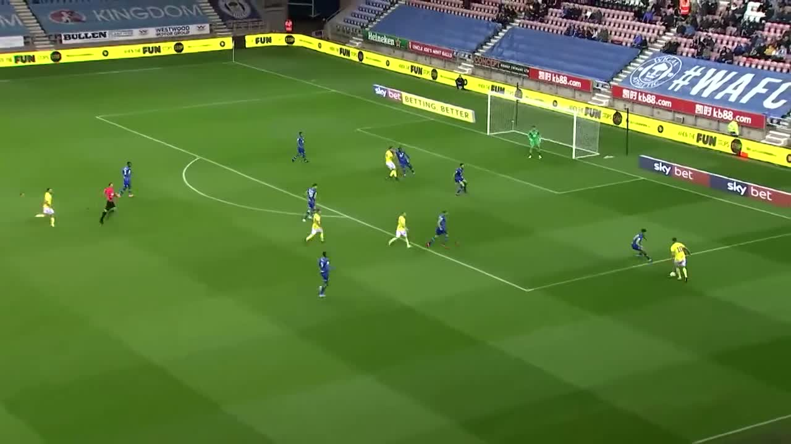
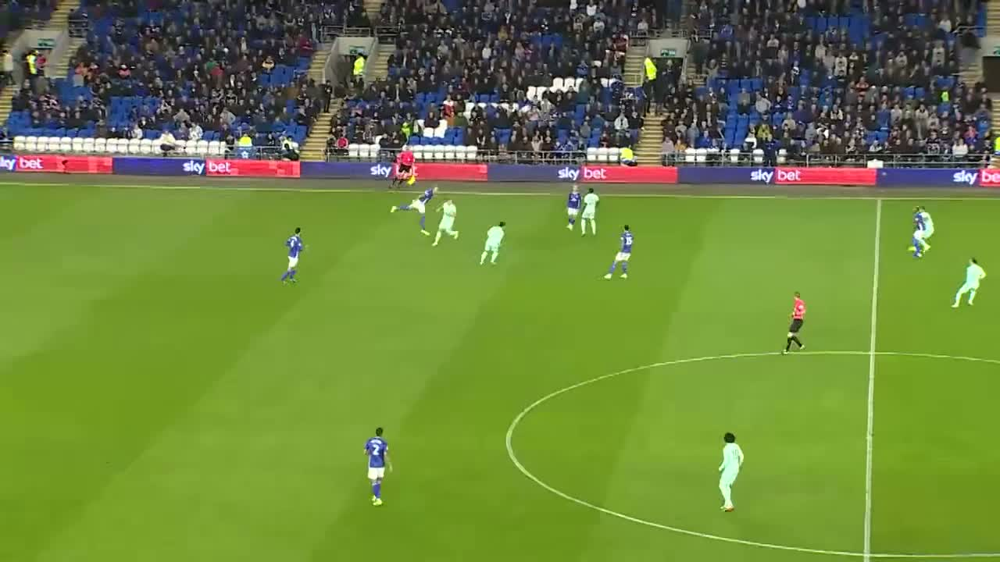
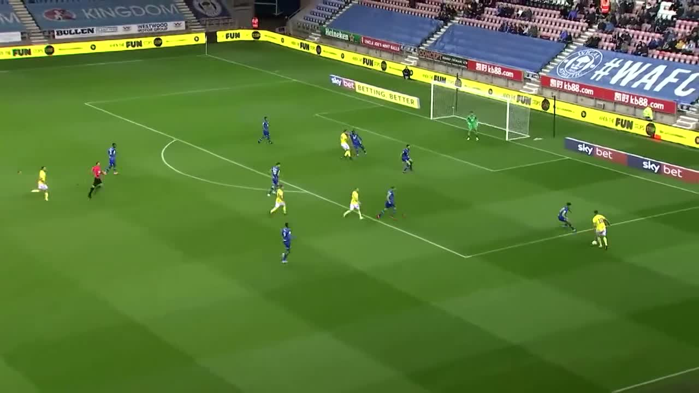
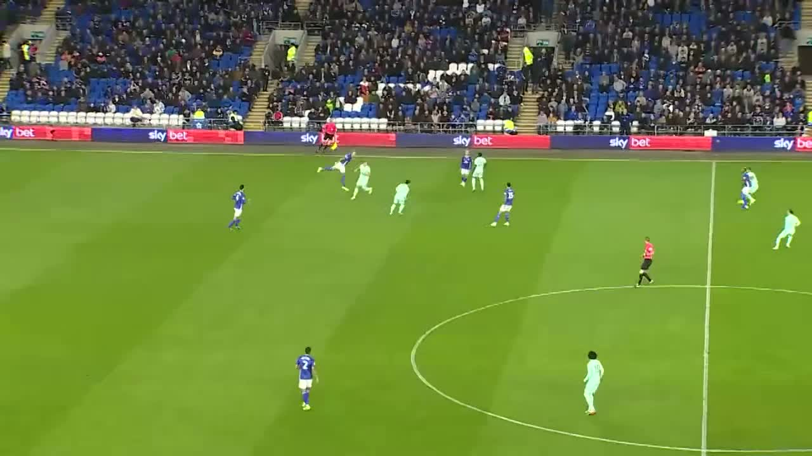

Results & Implementation
Dataset Overview
We use the SoccerNet MV-Foul dataset, which contains multi-view video clips of foul events from professional soccer matches. Each clip is labeled with:
- Foul Severity: No Offence, Offence + No Card, Yellow Card, or Red Card
- Foul Type: Tackling, Holding, Pushing, High Leg, Elbowing, etc.
Sample Foul Clips (Multi-View)
Showing: Event A — Camera View 1
1. Single-View Baseline (ResNet18)
Our first baseline uses a pretrained ResNet18 backbone to process 16 frames from a single camera view.
- Train samples: 1000
- Validation samples: 300
- Frames per clip: 16
- Batch size: 4
- Epochs: 5
Validation Loss Over Epochs
Performance Metrics
| Epoch | Val Loss | Severity BalAcc | Foul Type BalAcc |
|---|---|---|---|
| 1 | 3.0287 | 0.2430 | 0.0855 |
| 2 | 3.1253 | 0.2913 | 0.0884 |
| 3 | 3.2278 | 0.2864 | 0.0900 |
The model begins overfitting after epoch 3, so we use epochs 1–3 as the clean single-view baseline.
2. Multi-View Baseline (2-View Fusion)
The multi-view baseline extends the single-view architecture by processing 2 synchronized camera views per foul event and averaging their features before classification.
- Views per action: 2
- Frames per view: 16
- Train samples: 1000
- Validation samples: 300
- Batch size: 2
- Epochs: 3
Foul Type Accuracy Comparison
Performance Metrics
| Epoch | Val Loss | Severity BalAcc | Foul Type BalAcc |
|---|---|---|---|
| 1 | 3.2196 | 0.2383 | 0.0810 |
| 2 | 3.1427 | 0.2737 | 0.0928 |
| 3 | 2.9233 | 0.2548 | 0.1091 |
Key finding: The multi-view baseline achieves ~21% better foul-type accuracy (0.1091 vs 0.0900) compared to single-view by epoch 3, validating the benefit of multiple camera angles.
Methodology
Data Pipeline
 



- Load Video: Read multi-view .mp4 clips using PyAV
- Sample Frames: Uniformly sample 16 frames per clip
- Extract Features: Pass through ResNet18 backbone
- Fuse Views: (Multi-view only) Average features across views
- Classify: Two heads predict severity (4 classes) and type (8+ classes)
Architecture
Both models use a shared ResNet18 backbone pretrained on ImageNet. The backbone outputs a 512-dimensional feature vector per clip, which is fed into two separate classification heads.
How to Run
All scripts are in the code/ and scripts/ directories.
1. Download Dataset
# Sign the SoccerNet NDA first: https://www.soccer-net.org/data
pip install SoccerNet
python3 scripts/download_train.py
python3 scripts/download_valid.py2. Train Single-View Baseline
python3 code/train_baseline.py \
--data_root "/path/to/SoccerNetData/mvfouls" \
--epochs 5 \
--batch_size 4 \
--num_frames 16 \
--use_pretrained3. Train Multi-View Baseline
python3 code/train_multiview.py \
--data_root "/path/to/SoccerNetData/mvfouls" \
--epochs 3 \
--batch_size 2 \
--num_views 2 \
--use_pretrained